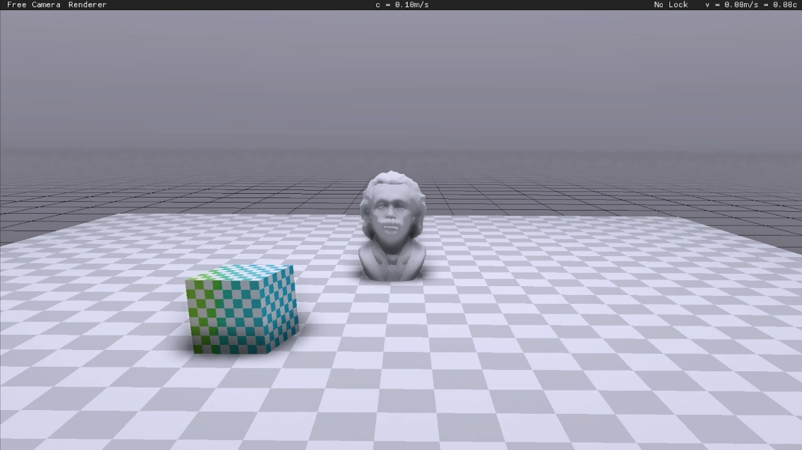

|
中国科学技术大学《计算机图形学》2024年春夏学期课程项目展示 |
|
|
|
项目9：
狭义相对论视觉效应模拟
刘子潮(PB22000015)1
夏子汐(PB22000057)2
朱雨田(PB22050888)3
1少年班学院2022级
2少年班学院2022级
3计算机科学与技术学院2023级
指导老师：刘利刚
|
|

图 1:
项目展示图 运动物体的形变与多普勒频移
|
|
项目简介：
自从爱因斯坦提出狭义相对论以来，就有许多学者对狭义相对论的视觉效应做出了研究。我们基于本课程提供的节点编程渲染框架，使用 C++ 和 OpenGL 实现了在狭义相对论条件下通过运动相机观察给定场景，包含静止和运动对象，其中包含运动物体的推迟时间变换、相机视角下光线方位和颜色的变换等，并进行了美观的渲染设计。我们还实现了上帝视角的模拟，和基于狭义相对论动力学的质点弹簧系统物理仿真。
|
|
项目视频： |
|
|
|
下载专区：
-
视频链接：下载 提取码：
-
报告链接：下载 提取码：
-
项目文件：下载 提取码：
|
|
项目分工：
-
刘子潮：推导狭义相对论视觉效应的理论和实现方法；实现相机视角下光线方位和颜色的变换；推导狭义相对论动力学和质点弹簧系统物理仿真的理论、实现质点弹簧系统的物理仿真并进行模拟结果的比较分析；文档原理和实现部分主要编写。
-
朱雨田：研究并修改框架底层代码，实现摄像机速度、光速、模型等物理量在不同模块间的共享；调整OpenGL，添加必要的中间量传递；实现狭义相对论视觉模拟中的推迟时间部分；设计观察者的交互逻辑；设计渲染部分，添加更多渲染节点与 Shader，调整实现更好的视觉效果；制作、修改各种场景模型、纹理；录制展示视频。
-
夏子汐：推导狭义相对论视觉效应的理论和实现方法；推导上帝视角理论、实现上帝视角并且对结果进行分析；进行了一些模型和场景的测试。
|
|
感想与不足：
-
在本项目中，我们成功地实现了：
- 静态场景的相对论视觉效应模拟；
- 动态场景推迟方程求解和相对论视觉效应模拟，且可以达到近乎实时的效果，形成了完整的相对论视觉模拟方法；
- 上帝视角的模拟；
- 以质点弹簧为例的相对论动力学物理仿真。
-
本项目仍有许多不足之处，如：
- 相机参考系是“瞬时共动”参考系，如果物体加速度很大，那么狭义相对论就不适用了；
- 没能够区分相机的固有时和默认系时间；
- 不能处理物体产生和消失的情况，因为要涉及 Mesh 拓扑的改变；
- 光栅化结果受到 Mesh 精度的影响，无法实现高精度的变换；
- 多普勒频移带来的颜色变化在物理上不准确，仅仅是简单的线性近似的结果；
- 上帝视角的模拟流程不够友善，需要额外的操作；
- 质点弹簧系统物理仿真中对能量守恒的修正不够精确，不能保证能量变化在合理范围内。
通过本项目的实践，我们对狭义相对论有了更加深入的理解，对狭义相对论下的视觉效应有了更加直观的感受。同时，我们对计算机图形学课程中许多学到的内容有了进一步的巩固和应用，对节点编程渲染框架底层运作的原理有了大致的认识，对一个大型工程的程序运行过程更加清晰。在项目的实现过程中，我们也遇到了许多困难，如对于框架的运行的理解、上帝视角的理论困难、物理仿真中的能量守恒问题、渲染的取舍处理等。解决这些问题的过程中，我们开拓了思路，学到了更多知识。
|
|
致谢：
-
感谢计算机图形学课程的沈鹏飞、李喆昊、吴汶政三位助教提供了本项目的框架支持，并为对框架的修改调整提供了悉心指导。尤其感谢沈鹏飞助教线下协助指导实现获取历史节点位置的功能。
-
感谢 MIT Game Lab 制作的游戏 A Slower Speed of Light 为物体的几何畸变与多普勒效应的期望效果提供了参考；感谢 B 站 Up 主“两颗熟李子”制作的相对论视觉效应系列视频，为测试场景的设计与期望的展示效果提供了灵感参考。
|
|
|
返回项目主页 |